Tài liệu dành cho nhân viên và quản lý chi nhánh. Menu và thao tác tùy theo vai trò, chi nhánh của tài khoản đang đăng nhập. Chỉ thực hiện những chức năng được phân quyền. Ảnh trong tài liệu này là giao diện tiếng Việt; ảnh giao diện tiếng Anh được tách riêng trong USER_GUIDE_EN.md.
Mỗi phần dưới đây ghi rõ giao diện cần mở và thao tác thực hiện tại đó. Tên menu in đậm khớp với tên trong thanh điều hướng; ảnh bên dưới từng phần minh họa màn hình hoặc hộp thoại được nhắc đến.
Trước khi chia sẻ: ảnh chụp có thể chứa dữ liệu mẫu về khách, nhân viên, đặt phòng hoặc thanh toán. Hãy kiểm tra và che thông tin cá nhân/tài chính trước khi phát hành tài liệu ra ngoài phạm vi khách sạn.
Giao diện thao tác: Màn hình Đăng nhập để vào hệ thống; sau khi đăng nhập, dùng thanh điều hướng bên trái để mở trang, thanh đầu trang để đổi ngôn ngữ và thẻ tài khoản ở cuối thanh bên để đăng xuất.
Đăng nhập bằng tài khoản nhân viên hoặc quản lý được cấp. Kiểm tra chi nhánh hiển thị trên thanh bên trước khi thay đổi dữ liệu.
Dùng menu bên trái để mở phân hệ. Bấm mũi tên cạnh mục có menu con để xem thêm trang; trên màn hình nhỏ, dùng nút menu để mở/đóng điều hướng.
Chọn Tiếng Việt trên thanh đầu trang để dùng giao diện tiếng Việt. Đổi ngôn ngữ chỉ đổi nhãn giao diện; tên, ghi chú hoặc nội dung do người dùng nhập có thể không đổi.
Nếu không thấy menu cần dùng, hãy nhờ quản lý kiểm tra vai trò thay vì dùng tài khoản của người khác.
Đăng xuất khi dùng xong, nhất là trên thiết bị dùng chung.
2. Tổng quan và báo cáo
Tổng quan
Trang Tổng quan để theo dõi nhanh; khi cần xử lý, hãy mở hồ sơ đặt phòng để kiểm tra đầy đủ.
Giao diện thao tác: Thanh bên → Tổng quan. Thẻ số liệu ở đầu trang, lịch nhận/trả phòng và danh sách dịch vụ chờ xác nhận nằm trên trang này; mở phân hệ tương ứng để thực hiện giao dịch.
Mở Tổng quan và xem các thẻ số liệu hoạt động của chi nhánh.
Kiểm tra ngày đang chọn; dùng điều khiển ngày để xem ngày khác hoặc quay lại hôm nay.
Chọn danh sách khách chờ nhận phòng, chờ trả phòng hoặc nhận phòng sớm để tìm đặt phòng liên quan.
Kiểm tra khách và phòng trước khi mở dòng; tiếp tục xử lý tại Check-in / Check-out hoặc Quản lý đặt phòng.
Ở danh sách dịch vụ chờ xác nhận, so sánh dịch vụ và số lượng đã đặt với lượng khách thực tế sử dụng trước khi xác nhận.
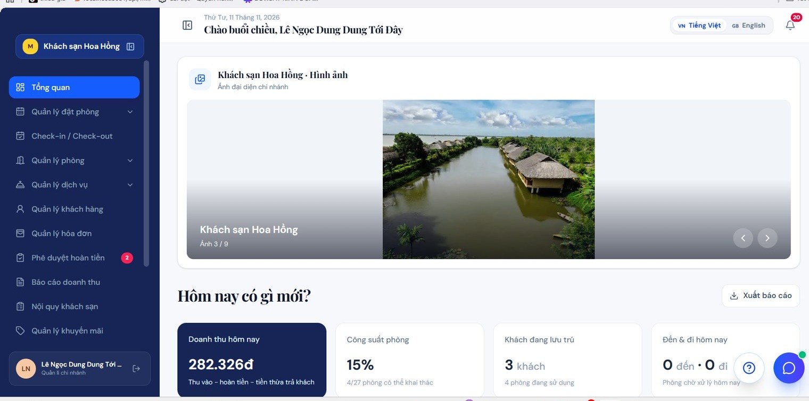
Màn hình 01 – Tổng quan chi nhánh
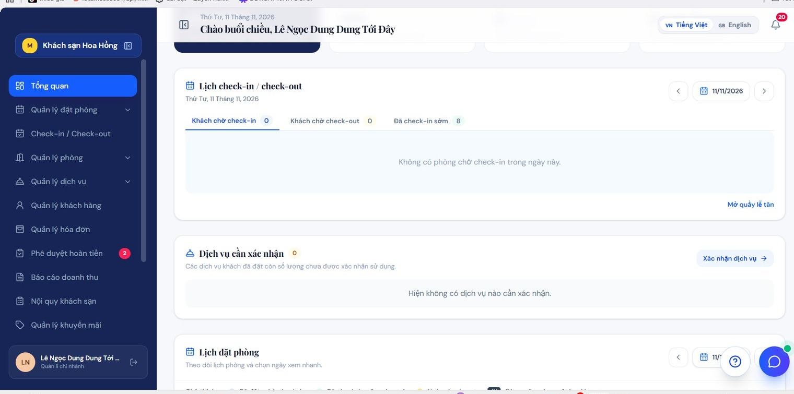
Màn hình 02 – Lịch nhận phòng, trả phòng và dịch vụ chờ xác nhận
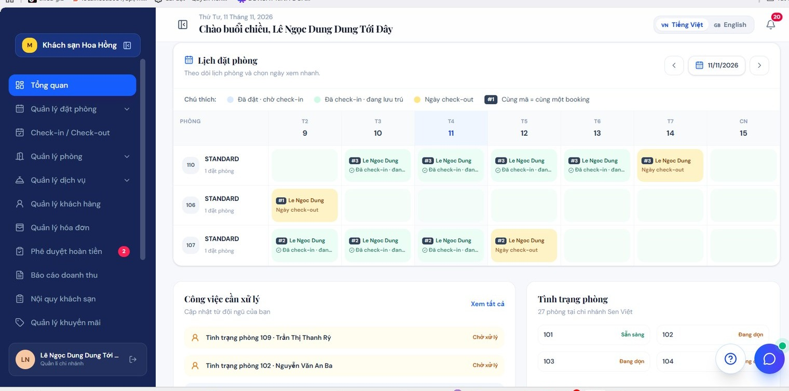
Màn hình 03 – Lịch đặt phòng, công việc cần xử lý và tình trạng phòng
Báo cáo doanh thu
Giao diện thao tác: Thanh bên → Báo cáo doanh thu. Chọn kỳ báo cáo ở bộ lọc đầu trang, sau đó xem từng tab/bảng thống kê.
Mở Báo cáo doanh thu và chọn khoảng ngày trước khi xem số liệu.
Xem các phần tổng quan, phòng, dịch vụ, khuyến mãi, trạng thái đặt phòng và đặt phòng bị hủy.
Dùng tab/bộ lọc để xem từng nhóm. Nếu khoảng ngày chưa đúng hoặc dữ liệu đang tải, hãy chỉnh lại hoặc tải lại trước khi xuất/chia sẻ.
Đối chiếu chênh lệch với đặt phòng và hóa đơn gốc; không coi báo cáo trống hoặc lỗi là số 0.
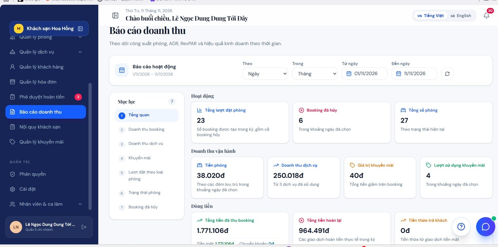
Màn hình 01 – Tổng quan doanh thu và hoạt động
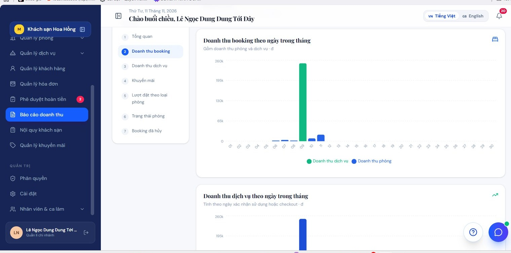
Màn hình 02 – Doanh thu đặt phòng và dịch vụ
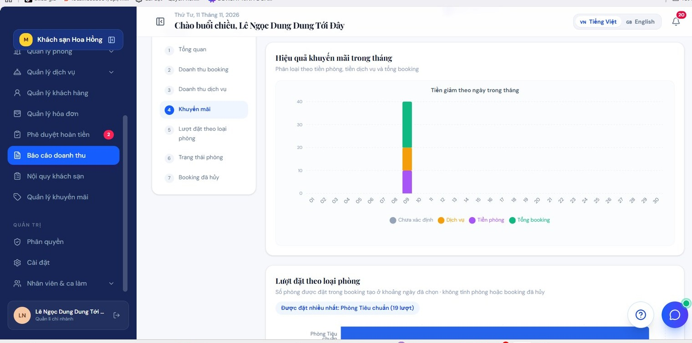
Màn hình 03 – Khuyến mãi và lượt đặt theo loại phòng
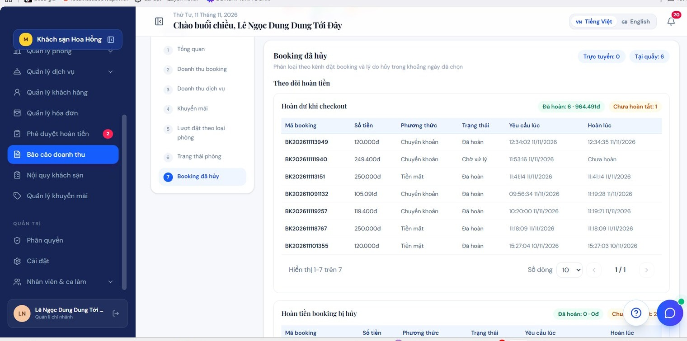
Màn hình 04 – Đặt phòng đã hủy và theo dõi hoàn tiền
3. Tạo và tra cứu đặt phòng
Tạo đặt phòng
Giao diện thao tác:Quản lý đặt phòng → Đặt phòng → Đặt phòng mới. Các bước trên cùng biểu mẫu lần lượt là Ngày & phòng → Thông tin đặt phòng → Dịch vụ → Khuyến mãi/tổng kết.
Mở Quản lý đặt phòng → Đặt phòng, chọn Đặt phòng mới.
Ở bước ngày và phòng, chọn ngày nhận phòng rồi ngày trả phòng. Kiểm tra số đêm và chú giải lịch để phân biệt phòng còn trống với phòng không thể chọn.
Tìm/lọc theo loại phòng, tầng hoặc tòa nhà. Chọn các ô phòng còn trống; bấm lại ô đã chọn để bỏ. Với đặt phòng nhiều phòng, kiểm tra từng phòng và ngày trước khi tiếp tục.
Tìm khách đã có hoặc nhập thông tin theo biểu mẫu. Kiểm tra hồ sơ khách được chọn, thông tin liên hệ, số người mỗi phòng, sức chứa và phụ thu hiển thị.
Chọn dịch vụ cho tất cả phòng hoặc cấu hình riêng từng phòng. Kiểm tra đơn vị, số lượng, phòng áp dụng và chi phí dự kiến. Không chọn dịch vụ khách không yêu cầu.
Tìm hoặc nhập mã khuyến mãi. Mở chi tiết để kiểm tra phạm vi áp dụng, giá trị tối thiểu, thời hạn và trạng thái trước khi chọn.
Rà soát khách, phòng, ngày ở, dịch vụ, khuyến mãi và tổng tiền. Chỉ gửi một lần, chờ thông báo thành công và ghi lại mã đặt phòng.
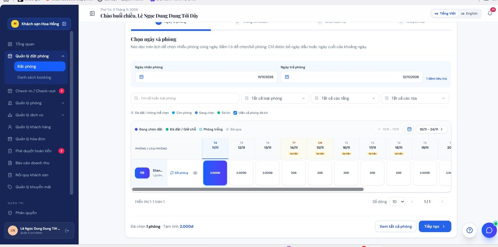
Màn hình 01 – Chọn ngày và phòng
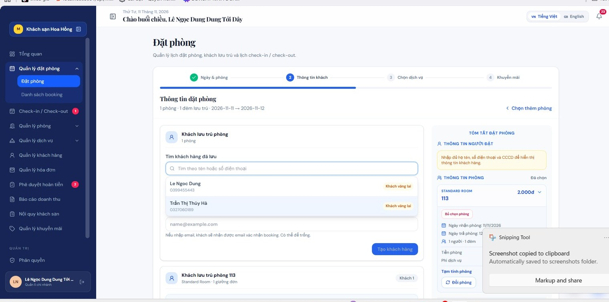
Màn hình 02 – Tìm và chọn khách hàng
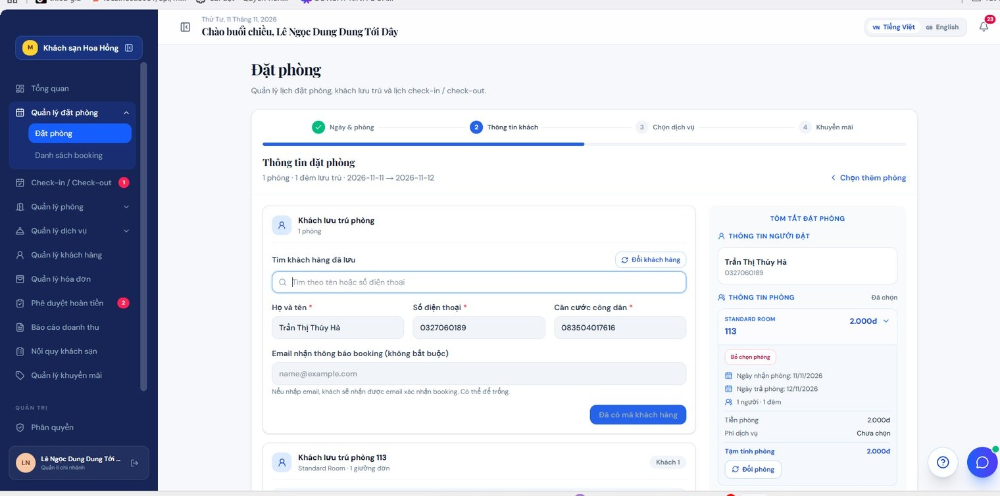
Màn hình 03 – Nhập thông tin khách đặt phòng
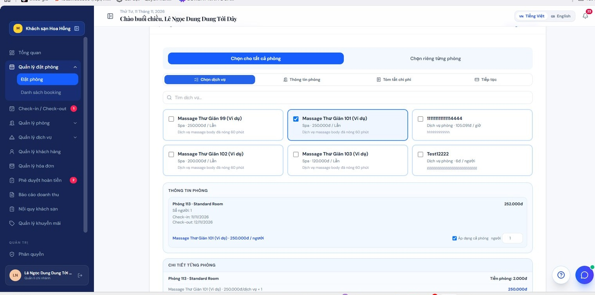
Màn hình 04 – Chọn dịch vụ
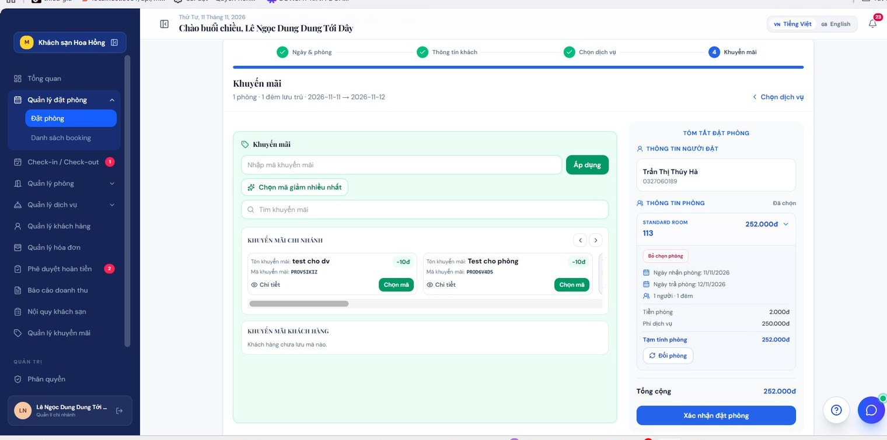
Màn hình 05 – Chọn khuyến mãi và xác nhận đặt phòng
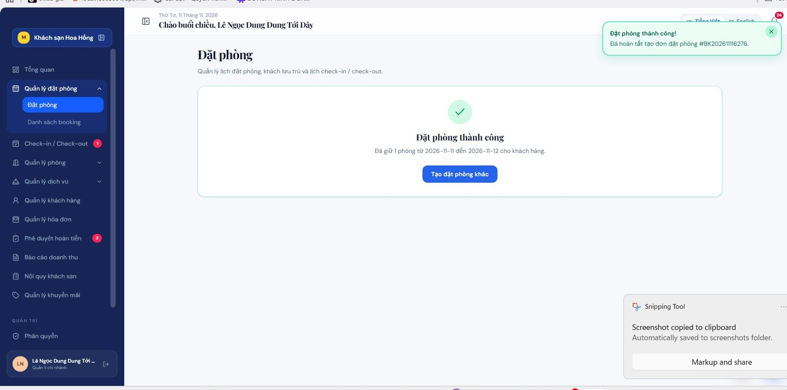
Màn hình 06 – Đặt phòng thành công
Tra cứu và xem đặt phòng
Giao diện thao tác:Quản lý đặt phòng → Danh sách đặt phòng. Tìm đặt phòng ở bảng danh sách, chọn dòng/thao tác chi tiết để mở hồ sơ và lịch sử thanh toán.
Mở Quản lý đặt phòng → Danh sách đặt phòng. Tìm kiếm và lọc theo các trường ngày, khách, đặt phòng hoặc trạng thái có trên màn hình.
Kiểm tra mã đặt phòng, khách, ngày ở, phòng, trạng thái thanh toán và tổng tiền trước khi mở/chỉnh sửa.
Dùng chi tiết đặt phòng và lịch sử thanh toán để đối chiếu số tiền. Chỉ chỉnh sửa khi trạng thái đặt phòng cho phép.
Sau khi lưu, mở lại hoặc tải lại hồ sơ để xác nhận trạng thái và thông tin mới.
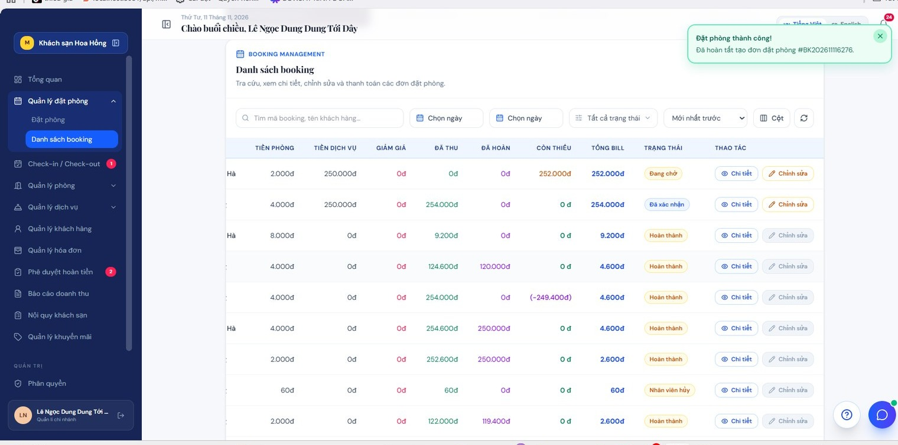
Màn hình 01 – Danh sách và trạng thái đặt phòng
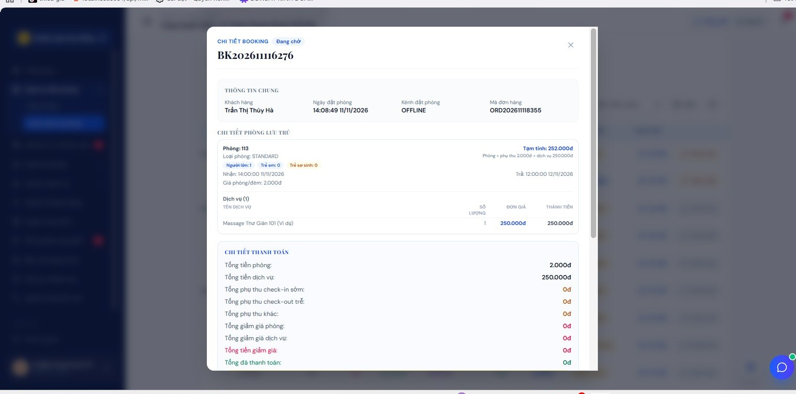
Màn hình 02 – Chi tiết đặt phòng và thanh toán
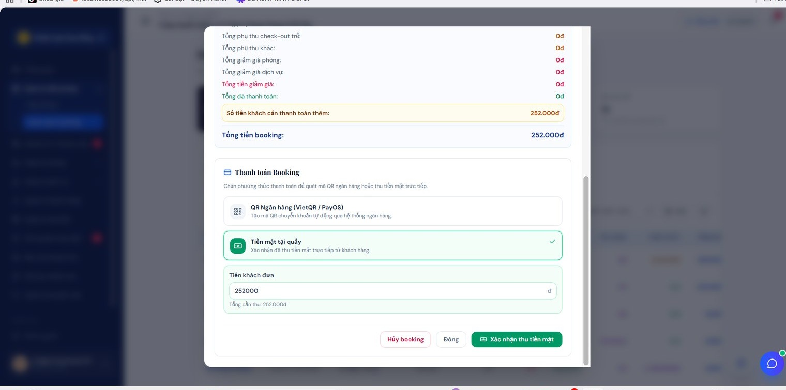
Màn hình 03 – Ghi nhận thanh toán đặt phòng
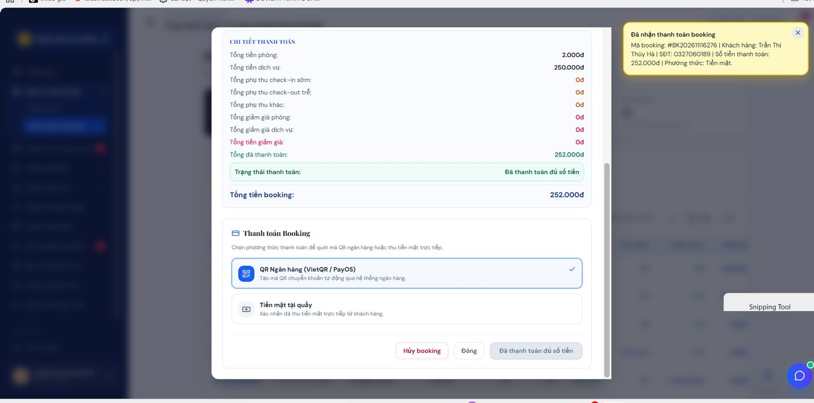
Màn hình 04 – Thanh toán đặt phòng thành công
4. Chỉnh sửa đặt phòng và thêm dịch vụ
Dùng luồng này khi khách muốn đặt thêm dịch vụ cho đặt phòng hiện có. Đây là thao tác khác với thêm dịch vụ mới vào danh mục khách sạn.
Giao diện thao tác:Quản lý đặt phòng → Danh sách đặt phòng → chọn đặt phòng → Chỉnh sửa. Trong biểu mẫu chỉnh sửa, dùng mục Thêm dịch vụ phát sinh cho các phòng đang chọn; nút Cập nhật lưu thay đổi đặt phòng.
Trong Danh sách đặt phòng, tìm đúng đặt phòng và mở thao tác chỉnh sửa. Xác nhận mã đặt phòng và khách trước khi thay đổi.
Kiểm tra các phòng và dịch vụ hiện tại. Phần chọn dịch vụ mới áp dụng cho phòng còn hoạt động; không thể thêm dịch vụ cho phòng đã hủy/không còn hoạt động.
Ở mục Thêm dịch vụ phát sinh cho các phòng đang chọn, mở đúng phòng, chọn dịch vụ khách yêu cầu, nhập số lượng và kiểm tra đơn vị/giá hiển thị.
Lặp lại cho từng phòng cần thêm. Không chọn dịch vụ cho mọi phòng nếu khách chỉ yêu cầu ở một số phòng.
Rà soát số lượng cũ và lựa chọn mới. Bỏ chọn dịch vụ nhầm, xác nhận lại phòng và số lượng.
Chọn Cập nhật một lần, chờ kết quả lưu rồi mở lại đặt phòng để kiểm tra dịch vụ và số lượng đã ghi nhận.
Giải thích khoản phí phát sinh cho khách và kiểm tra hóa đơn/số dư mới theo quy trình của chi nhánh.
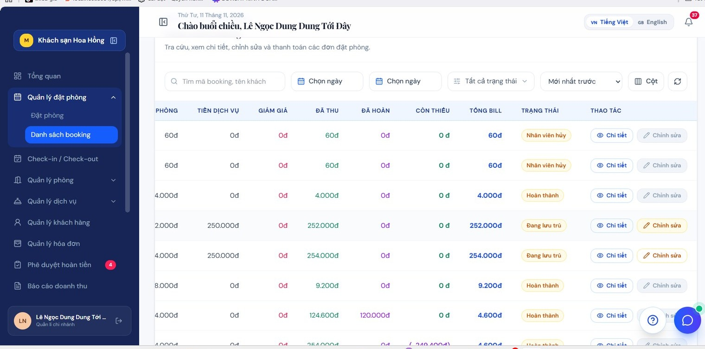
Màn hình 01 – Danh sách đặt phòng trước khi chỉnh sửa
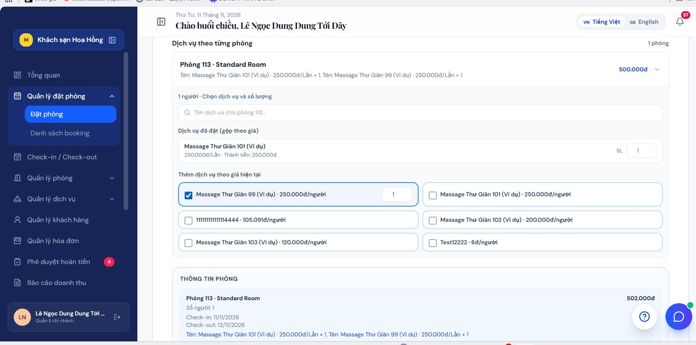
Màn hình 02 – Chọn dịch vụ bổ sung cho từng phòng
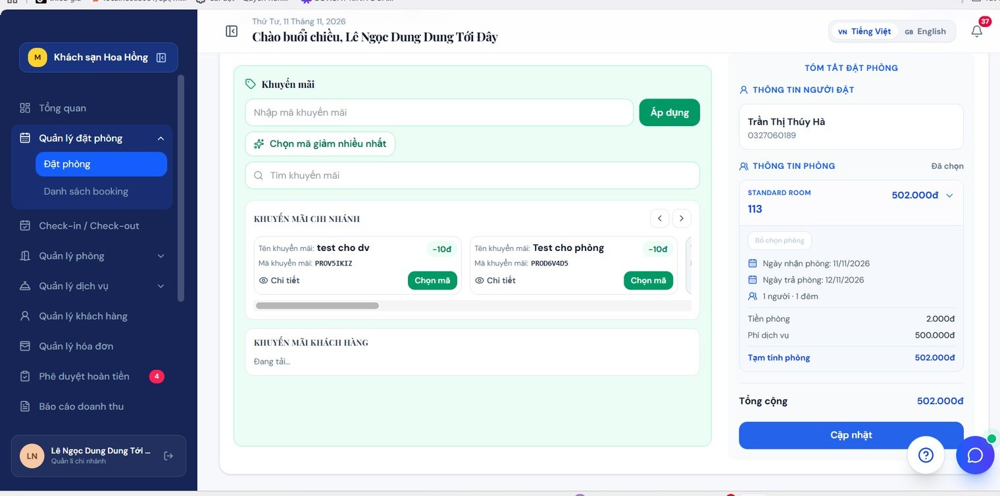
Màn hình 03 – Kiểm tra tổng tiền dịch vụ
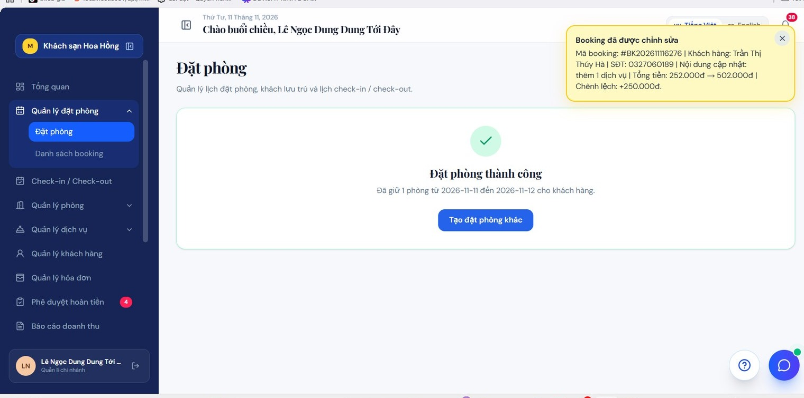
Màn hình 04 – Đặt phòng đã được cập nhật
5. Hủy đặt phòng và hoàn tiền cho khách
Hủy đặt phòng làm thay đổi trạng thái đặt phòng và có thể phát sinh hoàn tiền. Kiểm tra chính sách khách sạn và khoản khách đã thanh toán trước khi xác nhận.
Giao diện thao tác:Quản lý đặt phòng → Danh sách đặt phòng → Hủy đặt phòng mở hộp thoại hủy. Xem tiền hoàn ở bước Xem trước, chọn tiền mặt/chuyển khoản ở phần Phương thức hoàn tiền, rồi nhập lý do/email và xác nhận trong cùng hộp thoại. Thông tin ngân hàng có thể nhập tại đây hoặc bổ sung trong Phê duyệt hoàn tiền.
Trong Danh sách đặt phòng, tìm và xác nhận đúng đặt phòng. Thao tác nhân viên hủy chỉ khả dụng với đặt phòng ở trạng thái Đang chờ hoặc Đã xác nhận.
Chọn Hủy đặt phòng. Chờ hệ thống xem trước khoản hoàn dựa trên số tiền đã thanh toán và chính sách hủy.
Đối chiếu tiền đã thanh toán, tiền phòng, tiền phạt phòng, tiền phòng được hoàn, tiền dịch vụ được hoàn, tổng hoàn, mốc chính sách và số giờ còn lại đến giờ nhận phòng. Nếu xem trước lỗi hoặc không có dữ liệu, hãy thử lại; không xác nhận hủy khi chưa có số tiền chính xác.
Các mốc phạt tiền phòng trong phần xem trước:
Hủy trước giờ nhận phòng từ 72 giờ trở lên: không phạt tiền phòng.
Hủy trước từ 24 đến dưới 72 giờ: phạt 50% khoản thanh toán tiền phòng được phân bổ.
Hủy dưới 24 giờ hoặc khách không đến: phạt 100% khoản thanh toán tiền phòng được phân bổ.
Tiền dịch vụ được hoàn theo phần thanh toán đã phân bổ; khoản phạt chỉ trừ vào tiền phòng.
Chọn phương thức hoàn:
Tiền mặt tại khách sạn: giao đúng số tiền hiển thị cho khách, sau đó tích xác nhận đã giao tiền. Hệ thống ghi nhận hoàn tiền mặt ngay khi xác nhận hủy.
Chuyển khoản vào tài khoản: chọn ngân hàng, nhập tên chủ tài khoản và số tài khoản nếu đã có thông tin. Thông tin ngân hàng có thể để trống lúc hủy và bổ sung sau ở Phê duyệt hoàn tiền. Nếu nhập, điền đủ trường bắt buộc; số tài khoản phải có 6–50 chữ số. Khoản hoàn chuyển khoản cần quản lý duyệt và nhân viên thực hiện chuyển.
Có thể nhập lý do hủy và email thông báo cho khách. Kiểm tra chính tả email nếu có nhập.
Xác nhận hủy một lần. Kiểm tra thông báo thành công cùng trạng thái đặt phòng/hoàn tiền mới. đặt phòng đã hủy chưa đồng nghĩa tiền chuyển khoản đã được gửi; tiếp tục theo luồng phê duyệt ở mục 12.
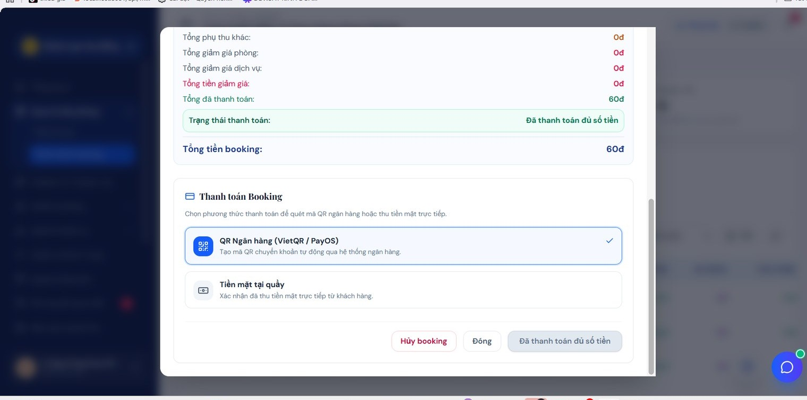
Màn hình 01 – Xem trước tiền hoàn và chi tiết thanh toán
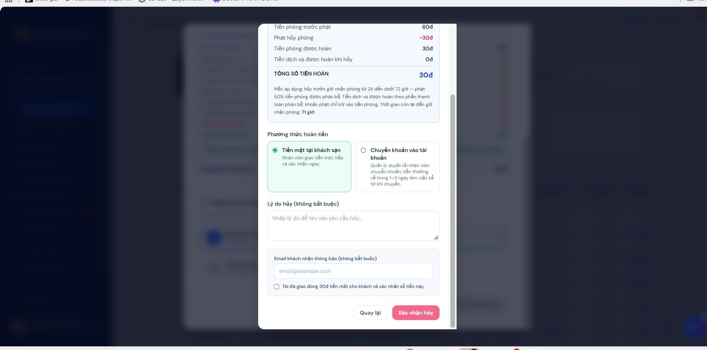
Màn hình 02 – Chọn hoàn tiền mặt hoặc chuyển khoản
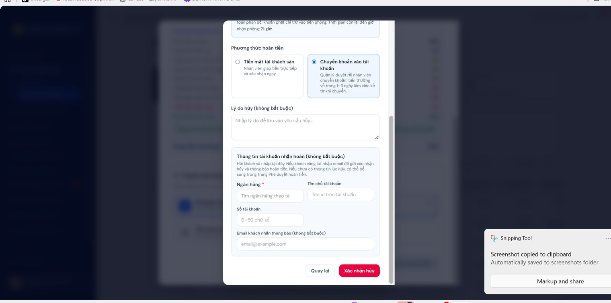
Màn hình 03 – Kiểm tra điều kiện hủy
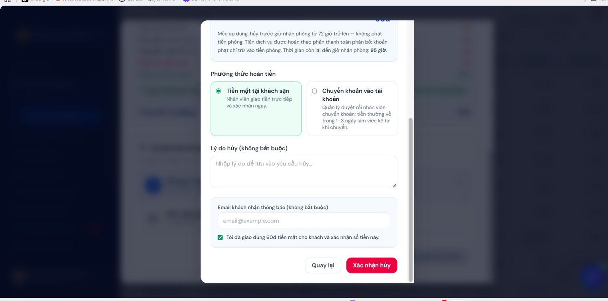
Màn hình 04 – Nhập thông tin tài khoản ngân hàng
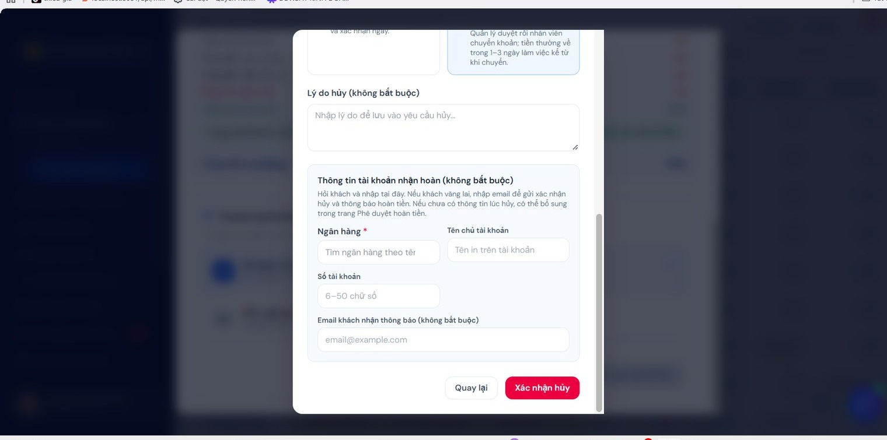
Màn hình 05 – Kiểm tra thông tin hủy đặt phòng
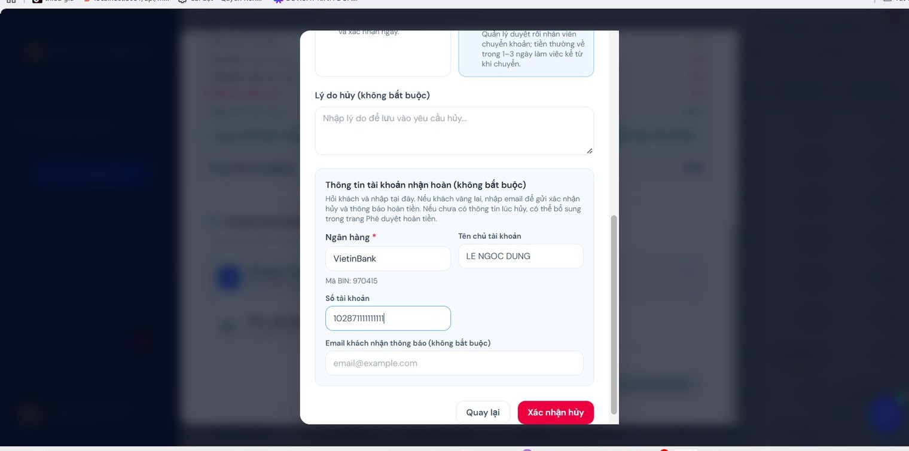
Màn hình 06 – Kết quả hủy đặt phòng
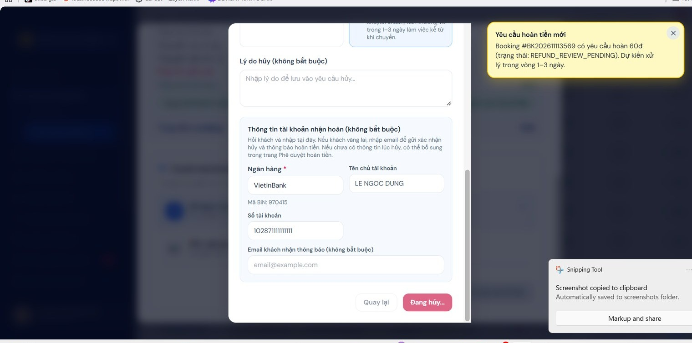
Màn hình 07 – Màn hình bổ sung về hủy và hoàn tiền
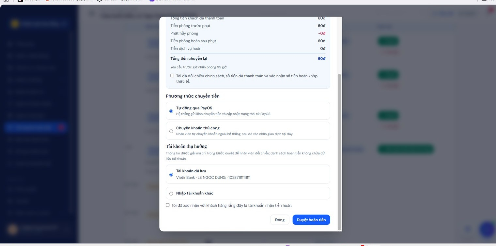
Màn hình 08 – Hủy đặt phòng
6. Check-in, check-out và hoàn tiền dư
Giao diện thao tác: Thanh bên → Check-in / Check-out. Chọn tab nhận phòng hoặc trả phòng, mở đặt phòng để rà soát từng phòng; chọn phương thức hoàn dư trong biểu mẫu xác nhận trả phòng. Với thao tác nhóm, dùng các ô chọn trên danh sách.
Mở Check-in / Check-out, chọn đúng ngày và tab nhận phòng hoặc trả phòng, sau đó tìm đặt phòng.
Mở đặt phòng và xác nhận mã, khách, phòng, thời gian lưu trú, số người, tình trạng thanh toán và khoản phụ thu đến sớm/trả muộn nếu có.
Khi nhận phòng, thông báo khoản phí đến sớm nếu có; kiểm tra phòng và thông tin thanh toán trước khi hoàn tất.
Khi trả phòng, kiểm tra từng phòng, hóa đơn và khoản phát sinh. Xác nhận dịch vụ khách thực tế đã dùng tại Quản lý dịch vụ → Thao tác dịch vụ khách hàng; không thực hiện xác nhận lượng dịch vụ trong màn hình Check-out. Kiểm tra khoản trả muộn và số tiền cuối cùng.
Nếu cần hoàn khoản thu dư, chọn Tiền mặt hoặc Chuyển khoản trong phần phương thức hoàn:
Với tiền mặt, giao lại tiền cho khách tại quầy và xác nhận đã giao.
Với chuyển khoản, chọn ngân hàng và nhập tên chủ tài khoản, số tài khoản. Các trường này bắt buộc trong luồng hoàn dư khi check-out; xác minh với khách trước khi tiếp tục.
Kiểm tra lại số tiền hoàn và các phòng/đặt phòng được chọn rồi hoàn tất check-out một lần. Hoàn chuyển khoản vẫn cần quản lý duyệt và xử lý ở mục Phê duyệt hoàn tiền.
Với check-out nhóm/hàng loạt, kiểm tra từng phòng được chọn. Thao tác hàng loạt tác động lên các dòng đã chọn; bỏ các lựa chọn không liên quan trước khi xác nhận.
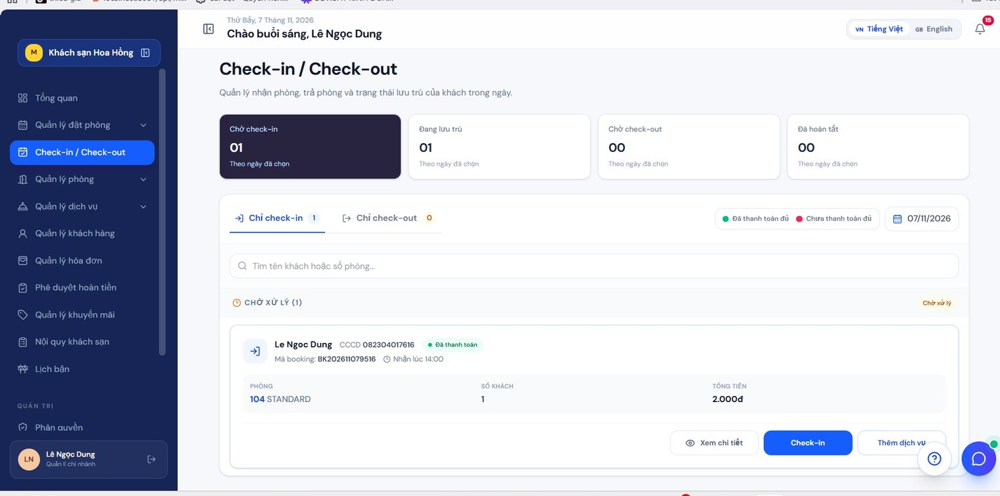
Màn hình 01 – Danh sách booking chờ check-inMàn hình 02 – Xác nhận check-in sớm và phụ thuMàn hình 03 – Booking đã check-in trong ngàyMàn hình 04 – Hàng đợi check-out và hóa đơnMàn hình 05 – Check-out còn khoản phải thu
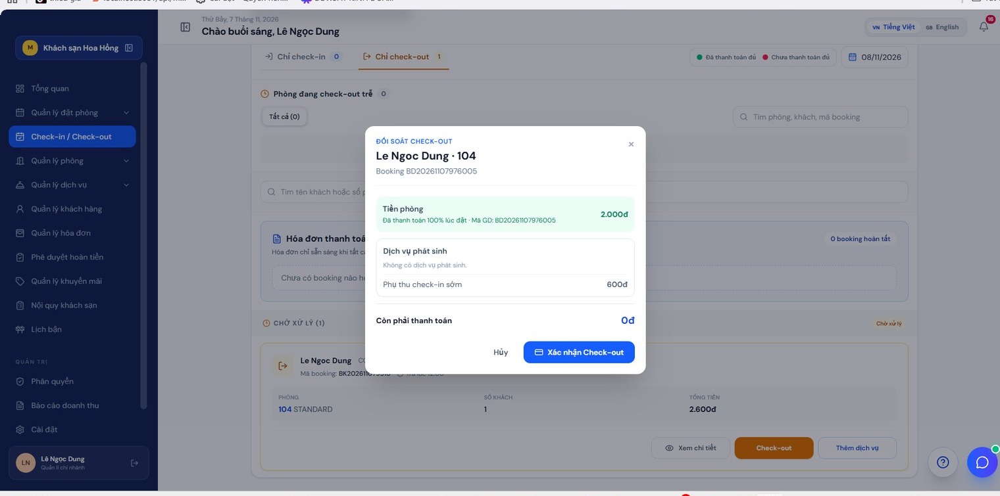
Màn hình 06 – Check-out không còn khoản phải thuMàn hình 07 – Check-out hoàn tất và xem hóa đơn
7. Phòng, giá, tòa nhà, tầng và nội quy
Danh sách phòng và chi tiết phòng
Giao diện thao tác:Quản lý phòng → Quản lý danh sách phòng. Bảng phòng và bộ lọc dùng để tra cứu; chọn dòng hoặc nút thêm/sửa để mở chi tiết phòng.
Mở Quản lý phòng → Quản lý danh sách phòng. Tìm/lọc theo phòng, loại, tầng, tòa nhà và trạng thái.
Mở đúng phòng để xem thông tin, sức chứa, tiện nghi, hình ảnh và trạng thái.
Chỉ thêm/chỉnh sửa phòng khi được phân quyền. Kiểm tra số phòng, loại, tòa/tầng và sức chứa trước khi lưu.
Chọn trạng thái đúng với tình hình thực tế. Không chuyển phòng sang sẵn sàng trước khi dọn/kiểm tra xong.
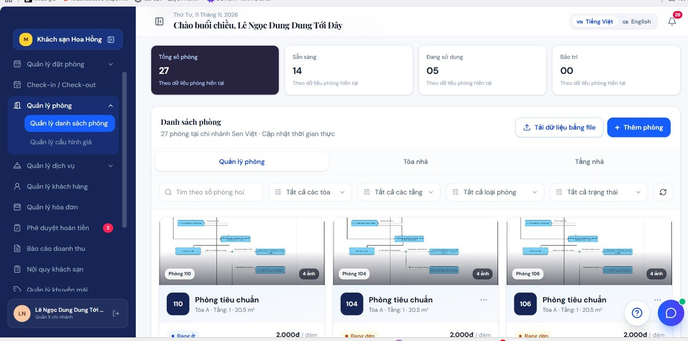
Màn hình 01 – Danh sách phòng và trạng thái
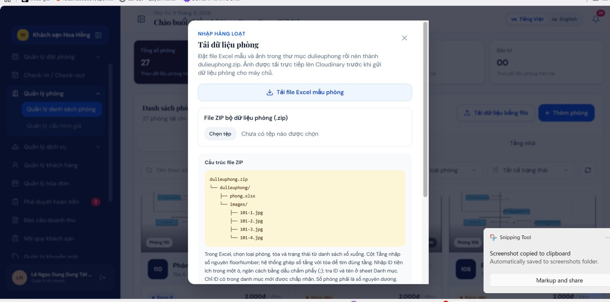
Màn hình 02 – Nhập hàng loạt phòng bằng Excel/ZIP
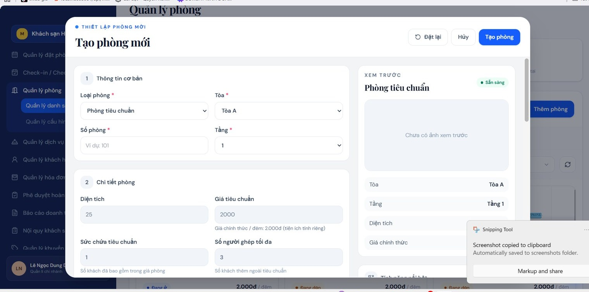
Màn hình 03 – Tạo phòng mới
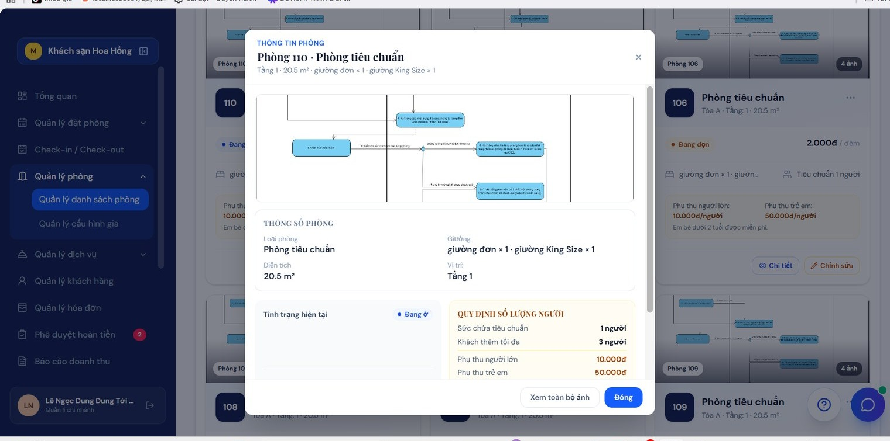
Màn hình 04 – Chi tiết thông tin phòng
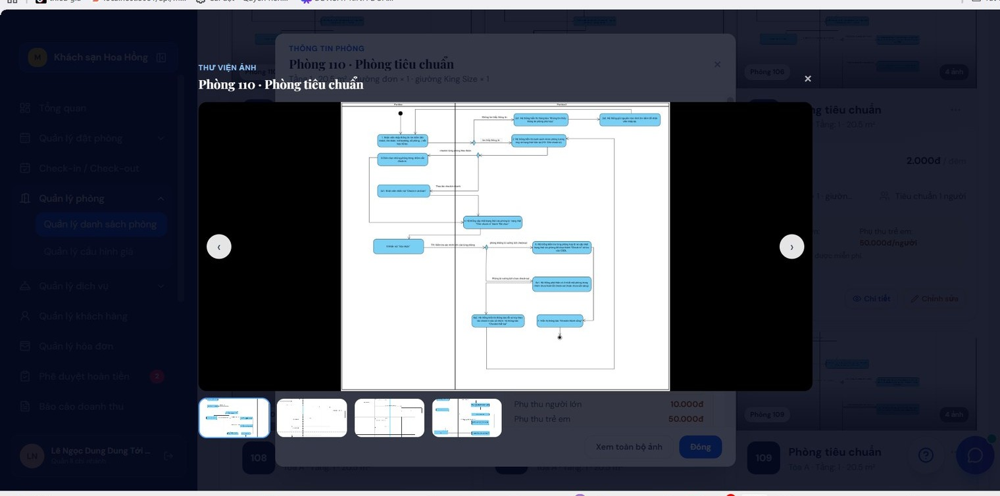
Màn hình 05 – Thư viện ảnh phòng
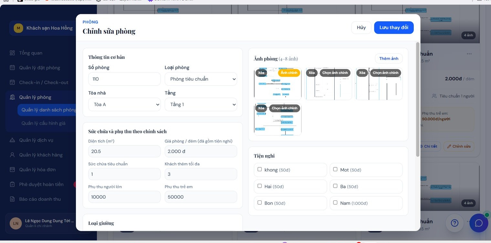
Màn hình 06 – Chỉnh sửa thông tin phòng
Giá phòng và cấu hình tòa/tầng
Giá cơ bản
Giao diện thao tác:Quản lý phòng → Quản lý cấu hình giá → Cấu hình giá theo loại phòng. Chọn thẻ loại phòng để xem hoặc sửa giá cơ bản.
Mở Quản lý phòng → Quản lý cấu hình giá → Cấu hình giá theo loại phòng.
Chọn đúng loại phòng, kiểm tra giá theo đêm, sức chứa tiêu chuẩn, giới hạn khách ghép và phụ thu người lớn/trẻ em.
Chỉ cập nhật giá sau khi đã xác nhận quy định áp dụng; lưu một lần rồi kiểm tra lại thẻ loại phòng.
Giá theo sự kiện
Giao diện thao tác: Cùng trang Quản lý cấu hình giá, chuyển sang tab Cấu hình giá theo sự kiện để lọc danh sách hoặc chọn Tạo sự kiện giá mới để mở biểu mẫu.
Chọn tab Cấu hình giá theo sự kiện để xem danh sách quy tắc; dùng tìm kiếm, ngày, trạng thái hoặc loại phòng để lọc.
Chọn Tạo sự kiện giá mới. Nhập tên sự kiện và ngày bắt đầu/kết thúc chính xác.
Trong từng nhóm giá, chọn loại phòng áp dụng và nhập giá áp dụng (đồng) cho nhóm đó. Kiểm tra mỗi loại phòng được xếp đúng nhóm theo kế hoạch giá.
Chỉ lưu khi tên, khoảng ngày, loại phòng và giá của tất cả nhóm đã đúng. Tìm lại sự kiện trong bảng để kiểm tra trạng thái, thời hạn và giá.
Tòa nhà và tầng
Giao diện thao tác:Quản lý phòng → Quản lý danh sách phòng → tab Tòa nhà hoặc Tầng nhà. Nút thêm/sửa mở biểu mẫu tương ứng; chức năng nhập Excel/CSV nằm trong tab tầng.
Trong Quản lý danh sách phòng, mở tab Tòa nhà để tìm, thêm hoặc chỉnh sửa tòa. Khi tạo, nhập tên tòa; mã tòa được hệ thống tạo sau khi lưu.
Mở tab Tầng nhà, chọn đúng tòa rồi thêm tầng bằng số nguyên dương.
Nếu nhập từ Excel/CSV, tải mẫu, điền tòa nhà (có thể để trống để dùng tòa đang chọn) và số tầng, rồi chọn file để nhập. Các tầng trùng đã có sẽ được bỏ qua; kiểm tra danh sách sau khi nhập.
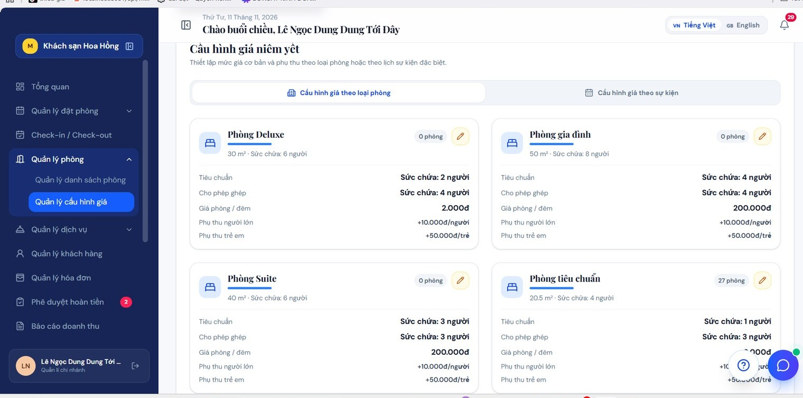
Màn hình 01 – Giá cơ bản theo loại phòng
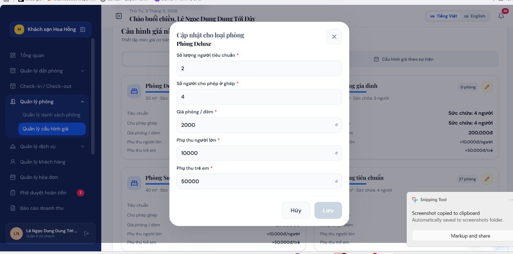
Màn hình 02 – Chỉnh sửa giá loại phòng
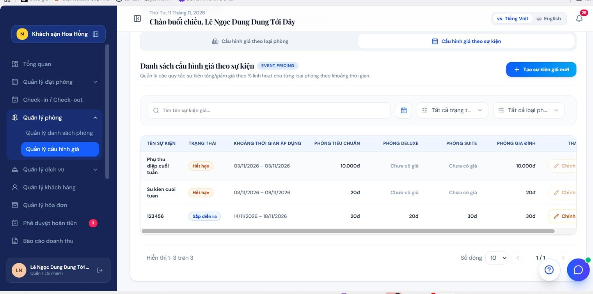
Màn hình 03 – Danh sách giá sự kiện
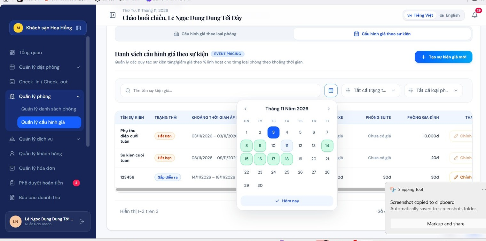
Màn hình 04 – Lọc sự kiện theo ngày
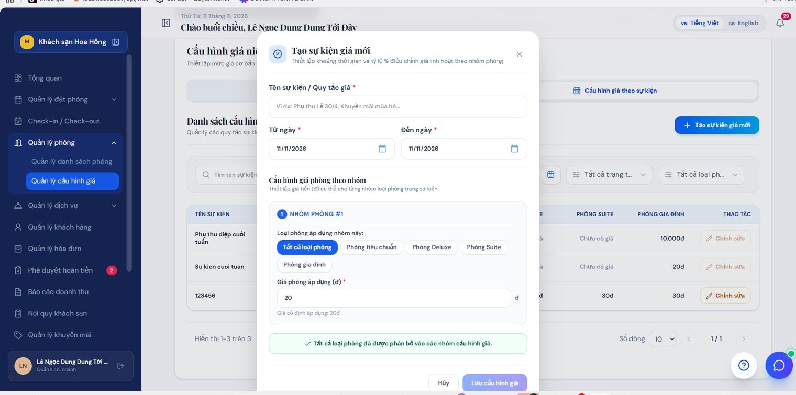
Màn hình 05 – Tạo quy tắc giá sự kiện
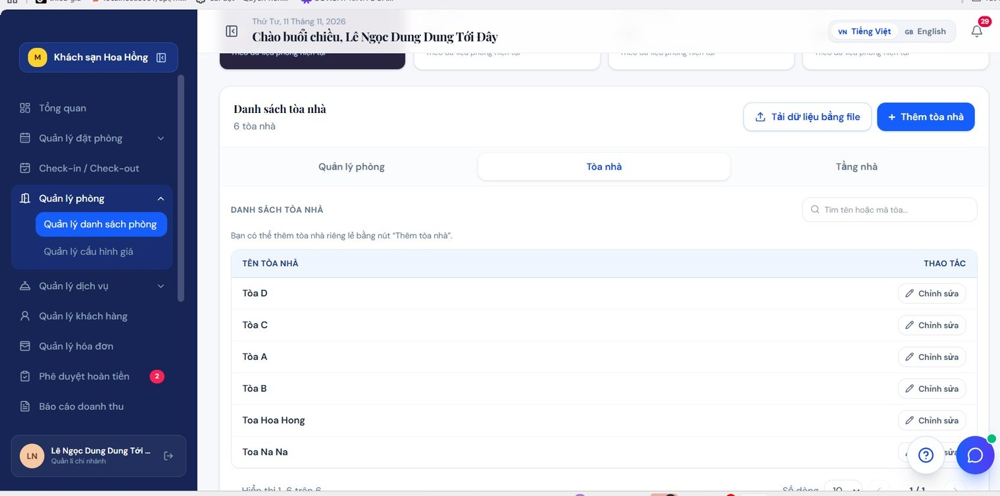
Màn hình 01 – Danh sách tòa nhà
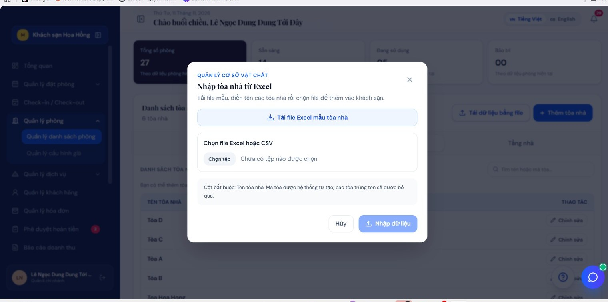
Màn hình 02 – Tạo hoặc sửa tòa nhà
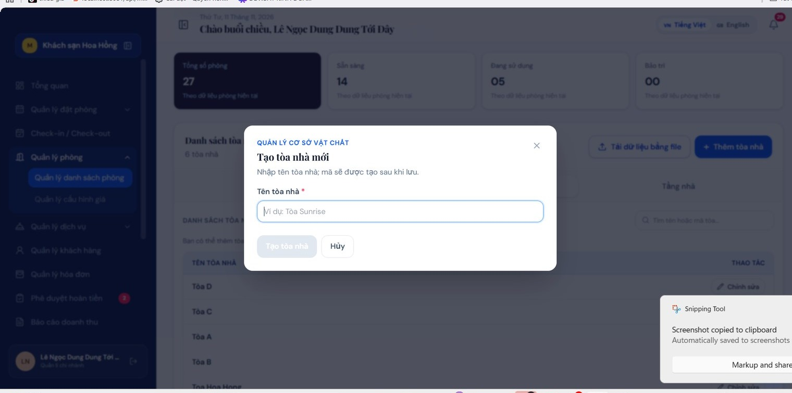
Màn hình 03 – Cấu hình tòa nhà
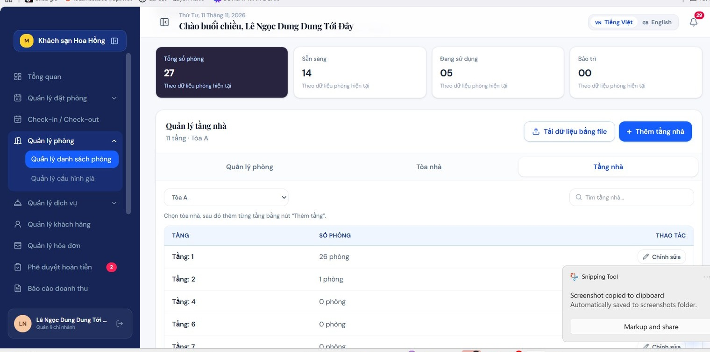
Màn hình 04 – Danh sách tầng của tòa đã chọn
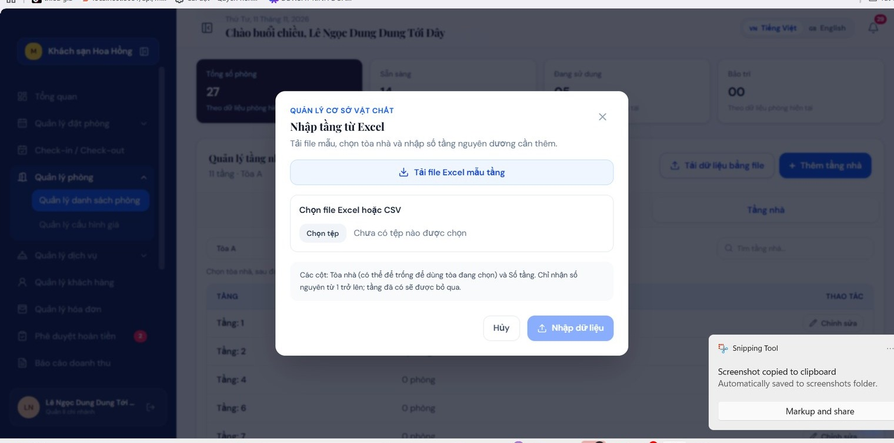
Màn hình 05 – Nhập tầng từ Excel/CSV
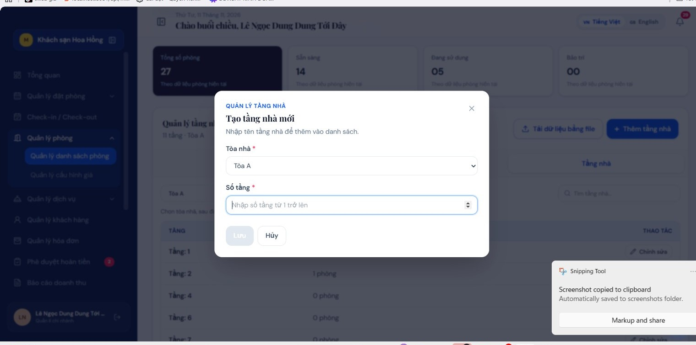
Màn hình 06 – Thêm hoặc sửa tầng
Nội quy khách sạn
Giao diện thao tác: Thanh bên → Nội quy khách sạn. Đọc các mục giờ nhận/trả phòng, hủy và dịch vụ; đây là trang tra cứu chính sách, không phải nơi hủy đặt phòng.
Mở Nội quy khách sạn để tra giờ nhận/trả phòng, chính sách hủy và quy định dịch vụ của chi nhánh trước khi tư vấn. Hỏi quản lý nếu có trường hợp ngoại lệ chưa rõ.
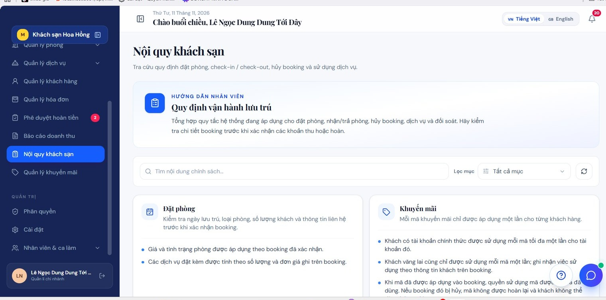
Màn hình 01 – Nội quy khách sạn
8. Danh mục dịch vụ và xác nhận dịch vụ khách dùng
Danh mục dịch vụ
Giao diện thao tác:Quản lý dịch vụ → Quản lý danh mục dịch vụ. Dùng bảng để tìm dịch vụ; nút thêm/sửa mở biểu mẫu thông tin dịch vụ; chức năng nhập hàng loạt nằm trong cùng phân hệ.
Mở Quản lý dịch vụ → Quản lý danh mục dịch vụ. Tìm/lọc danh sách và kiểm tra tên, danh mục, giá, đơn vị, ảnh và trạng thái hoạt động.
Mở chi tiết để xem mô tả. Quản lý được phân quyền có thể thêm/sửa; tài khoản nhân viên có thể chỉ được xem.
Khi thêm dịch vụ, điền tên, giá, đơn vị, danh mục, ảnh và mô tả bắt buộc. Xem lại thông tin rồi lưu một lần.
Chỉ nhập hàng loạt theo cấu trúc ZIP/Excel được cung cấp. Đối chiếu tên ảnh trong Excel với file ảnh và xem kết quả kiểm tra trước khi gửi nhập.
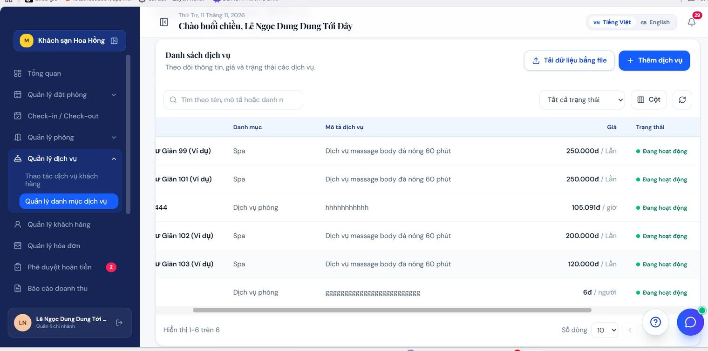
Màn hình 01 – Danh sách dịch vụMàn hình 02 – Nhập dịch vụ bằng Excel/ZIPMàn hình 03 – Thêm dịch vụMàn hình 04 – Chỉnh sửa dịch vụ
Xác nhận dịch vụ khách đã sử dụng
Giao diện thao tác:Quản lý dịch vụ → Thao tác dịch vụ khách hàng. Mở đặt phòng/dòng dịch vụ đang chờ, nhập lượng sử dụng thực tế và xác nhận tại màn hình này.
Mở Quản lý dịch vụ → Thao tác dịch vụ khách hàng, tìm đặt phòng/dịch vụ đang chờ xác nhận.
Kiểm tra khách, đặt phòng, phòng, dịch vụ, đơn vị và số lượng còn lại.
Chỉ nhập lượng khách thực tế đã dùng rồi xác nhận. Không xác nhận dịch vụ chưa dùng; hỏi khách hoặc quản lý nếu chưa rõ.
Kiểm tra lịch sử sử dụng sau khi lưu.
Màn hình 01 – Dịch vụ chờ xác nhậnMàn hình 02 – Chi tiết dịch vụ chờ xác nhậnMàn hình 03 – Lịch sử xác nhận dịch vụ
9. Khách hàng, đơn hàng và hóa đơn
Khách hàng
Giao diện thao tác: Thanh bên → Khách hàng. Tìm và mở hồ sơ khách trong danh sách để xem thông tin và lịch sử đặt phòng.
Tìm khách bằng tên, số điện thoại hoặc email trên màn hình; xác nhận đúng hồ sơ trước khi mở. Xem lịch sử đặt phòng khi cần. Chỉ thêm/sửa thông tin khi được phân quyền và luôn bảo mật dữ liệu cá nhân.
Màn hình 01 – Danh sách khách hàngMàn hình 02 – Thêm khách hàngMàn hình 03 – Xem lịch sử đặt phòng của kháchMàn hình 04 – Xác thực CCCD để chỉnh sửa hồ sơ
Đơn hàng và hóa đơn
Giao diện thao tác: Thanh bên → Quản lý hóa đơn. Tìm hồ sơ hóa đơn/đơn hàng trên trang này rồi mở chi tiết để đối chiếu đặt phòng, khoản phí và thanh toán.
Dùng Quản lý hóa đơn để tìm đúng hóa đơn, xem đặt phòng, các khoản phí, thanh toán và số dư; đối chiếu với đặt phòng gốc trước khi giải thích cho khách. Không thay đổi giao dịch tài chính ngoài quyền được cấp.
Màn hình 01 – Danh sách hóa đơn đã checkoutMàn hình 02 – Chi tiết và in hóa đơn thanh toán
10. Quản lý khuyến mãi
Giao diện thao tác: Thanh bên → Quản lý khuyến mãi. Bộ lọc ngày/trạng thái và các thẻ tổng kết ở trang danh sách; chọn chương trình hoặc nút tạo/sửa để mở chi tiết/biểu mẫu.
Mở Quản lý khuyến mãi, chọn ngày/tháng phù hợp. Dùng tìm kiếm và bộ lọc trạng thái/phạm vi để tìm chương trình.
Xem các thẻ tổng kết và danh sách khuyến mãi. Thẻ tổng kết theo kỳ đang chọn; kiểm tra ngày/tháng trước khi diễn giải số liệu.
Mở chi tiết chương trình để kiểm tra kiểu/mức giảm, phạm vi, mức tối thiểu, thời hạn, giới hạn lượt dùng và trạng thái.
Quản lý có quyền có thể tạo/sửa khuyến mãi. Nhập ngày, phạm vi, mức giảm, giới hạn và trạng thái; rà soát lỗi trường và kiểm tra lại sau khi lưu.
Trước khi áp dụng mã cho đặt phòng, xác nhận mã đang hoạt động, còn thời hạn và đặt phòng thỏa mãn phạm vi cùng giá trị tối thiểu.
Màn hình 01 – Tổng quan chương trình khuyến mãiMàn hình 02 – Danh sách mã khuyến mãiMàn hình 03 – Tạo chương trình khuyến mãi
11. Nhân viên, ca làm và công việc
Danh sách nhân viên
Giao diện thao tác:Nhân viên & ca làm → Danh sách nhân viên. Tìm nhân viên trên bảng; chọn dòng hoặc nút thêm/sửa để mở hồ sơ.
Tìm đúng nhân viên và kiểm tra chi nhánh, vai trò, trạng thái hoạt động. Chỉ quản lý có quyền mới thêm/sửa hồ sơ hoặc phân vai trò nhân viên.
Màn hình 01 – Danh sách nhân viênMàn hình 02 – Thêm nhân viên từ ExcelMàn hình 03 – Thêm nhân viênMàn hình 04 – Chỉnh sửa hồ sơ và tài khoản nhân viên
Ca làm
Giao diện thao tác:Nhân viên & ca làm → Ca trực để xem lịch; tab Phân ca làm để tạo hoặc phân ca. Nhân viên xem ca của mình tại trang nhân viên.
Mở lịch ca và chọn tuần/ngày cần xem.
Khi tạo ca, chọn nhân viên, ngày và khung giờ. Kiểm tra ca trùng/chồng giờ và xác nhận nhân viên thuộc đúng chi nhánh.
Lưu/đăng lịch một lần rồi kiểm tra ca xuất hiện đúng. Nhân viên cần tự xem ca được xếp trước khi bắt đầu làm.
Màn hình 01 – Danh sách ca trực hôm nayMàn hình 02 – Lịch trực theo tuần
Màn hình 01 – Thiết lập lịch phân ca theo tuầnMàn hình 02 – Lịch phân ca theo nhân viênMàn hình 03 – Kiểm tra định biên nhân sự theo caMàn hình 04 – Tổng quan nhân viên theo ca
Công việc
Giao diện thao tác: Quản lý: Nhân viên & ca làm → Phân công công việc. Nhân viên: Phân công dọn phòng trong trang nhân viên. Thao tác phân công và cập nhật trạng thái nằm ở hai màn hình theo vai trò này.
Quản lý mở Phân công công việc, chọn phòng/công việc và nhân viên đang trong ca phù hợp, rồi rà soát trước khi lưu. Nhân viên mở danh sách công việc, kiểm tra phòng và hướng dẫn; chỉ cập nhật trạng thái khi công việc thực sự bắt đầu/hoàn thành.
Màn hình 01 – Quản lý phân công dọn phòngMàn hình 02 – Nhân viên nhận việc và xác nhận dọn phòng
12. Phê duyệt hoàn tiền
Giao diện thao tác: Thanh bên → Phê duyệt hoàn tiền. Chọn yêu cầu trong hàng chờ để mở chi tiết; bổ sung tài khoản, duyệt/từ chối và kiểm tra trạng thái tại màn hình này.
Mở Phê duyệt hoàn tiền và xem hàng chờ. Mở yêu cầu, đối chiếu đặt phòng, khách, số tiền, phương thức, lý do và thông tin tài khoản ngân hàng.
Với hoàn chuyển khoản, xác nhận thông tin tài khoản với khách trước khi duyệt. Nếu thiếu/sai, dùng thao tác bổ sung hoặc yêu cầu cập nhật theo màn hình; không duyệt tài khoản nhận chưa xác minh.
Chỉ duyệt/từ chối khi tài khoản có quyền và yêu cầu phù hợp chính sách. Thực hiện/ghi nhận chuyển khoản theo quy trình được khách sạn ủy quyền.
Kiểm tra trạng thái sau thao tác. Hoàn chuyển khoản chỉ hoàn tất sau khi hệ thống ghi nhận bước duyệt/chuyển; không báo khách đã nhận tiền trước khi có xác nhận.
Với hoàn tiền mặt, đối chiếu trạng thái hệ thống với việc giao tiền thực tế.
Màn hình 01 – Danh sách hoàn tiền dư sau checkoutMàn hình 02 – Danh sách hoàn tiền do hủy đặt phòngMàn hình 03 – Duyệt hoàn tiền checkout
13. Cài đặt, vai trò và phân quyền
Cài đặt
Giao diện thao tác: Thanh bên → Cài đặt. Sửa các trường tài khoản/chi nhánh được cấp quyền trên trang cài đặt rồi kiểm tra lại sau khi lưu.
Mở Cài đặt để xem thông tin tài khoản/chi nhánh. Chỉ thay đổi trường được giao quản lý; sau khi lưu, kiểm tra lại thông tin hoặc hình ảnh hiển thị.
Màn hình 01 – Thông tin tài khoản và chi nhánhMàn hình 02 – Xác thực mật khẩu để chỉnh sửaMàn hình 03 – Quản lý hình ảnh chi nhánh
Vai trò và phân quyền
Giao diện thao tác:Quản lý vai trò để xem/sửa vai trò; Phân quyền để xem quyền truy cập theo vai trò. Đây là hai màn hình riêng trong khu vực quản trị.
Dùng Quản lý vai trò để xem/quản lý vai trò khi được cấp quyền. Trong Phân quyền, kiểm tra vai trò và các quyền được cấp. Nếu thiếu menu hoặc nút, nhờ quản trị viên kiểm tra; không tìm cách vượt quyền.
Màn hình 01 – Phân quyền
14. Xử lý sự cố và thao tác an toàn
Giao diện thao tác: Đối chiếu lỗi ngay tại trang phát sinh (Danh sách đặt phòng, Check-in / Check-out, Phê duyệt hoàn tiền hoặc Danh mục dịch vụ). Nếu menu/nút bị ẩn, kiểm tra quyền ở Phân quyền cùng quản lý.
Không thấy đặt phòng/phòng: kiểm tra chi nhánh, ngày, tab, từ khóa và bộ lọc; xóa bộ lọc rồi tải lại trước khi kết luận không có dữ liệu.
Không có bảng xem trước hoặc số tiền hoàn: tải lại phần xem trước. Không hủy đặt phòng hoặc check-out với số tiền chưa xác minh.
Không tiếp tục được hoàn chuyển khoản: xác minh ngân hàng, tên chủ tài khoản và số tài khoản với khách. Khi hủy đặt phòng có thể bổ sung tài khoản sau nếu màn hình cho phép; luồng check-out yêu cầu nhập thông tin ngân hàng trước khi gửi.
Thiếu dịch vụ hoặc sai số lượng: kiểm tra phòng còn hoạt động và danh mục dịch vụ, sau đó mở lại đặt phòng. Không xác nhận số lượng vượt quá phần khách đã dùng.
Lưu lâu chưa có kết quả: chờ thông báo rồi kiểm tra lại hồ sơ trước khi gửi lần nữa để tránh thao tác trùng.
Menu hoặc nút không xuất hiện: nhờ quản lý xác nhận quyền của tài khoản.
Trước thao tác ảnh hưởng đến tiền, đặt phòng, phòng hoặc lịch nhân viên, hãy kiểm tra lại đối tượng và giá trị một lần cuối.